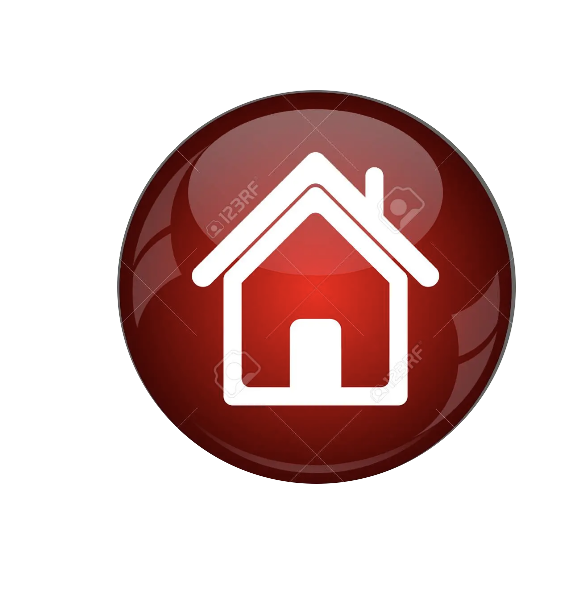

Brew
- Copy and paste the command in the terminal from the brew page here
- terminal: brew update --> for update
Node version manager nvm
- NVM documentation here
- for install --> terminal: curl -o- https://raw.githubusercontent.com/nvm-sh/nvm/v0.39.2/install.sh | bash
- open and close your terminal
- NVM commands examples:
- - Install node version 16 --> nvm install 16
- - Use node version 16 --> nvm use 16
- - List of node version installed --> nvm list
- - Set default version --> nvm use default 16
- - Node version active -->node -v